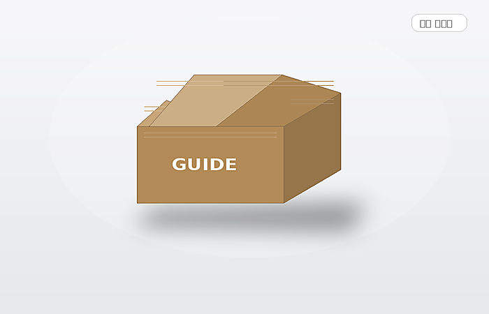
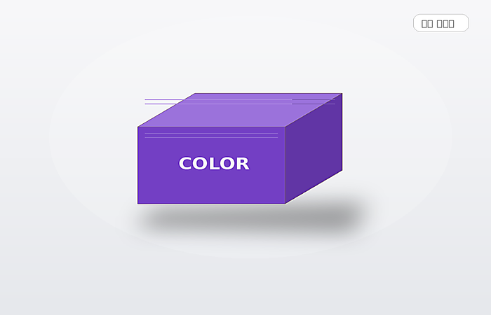

골판지 박스 안내
첫 번째 참고 화면의 핵심 내용을 에스디컴퍼니 톤으로 다시 풀었습니다. 기본 출고 구조부터 브랜드 배송 박스, 손잡이형과 얕은 구조까지 실제 선택 포인트에 집중해 설명합니다.
A형B형T형P형G형포스터형D형Y형
처음 주문하시는 분도 쉽게 이해할 수 있도록 자주 찾는 정보를 정리했습니다.

첫 번째 참고 화면의 핵심 내용을 에스디컴퍼니 톤으로 다시 풀었습니다. 기본 출고 구조부터 브랜드 배송 박스, 손잡이형과 얕은 구조까지 실제 선택 포인트에 집중해 설명합니다.

두 번째 참고 화면의 정보를 바탕으로 종이 단상자, 슬리브, 넉다운, 핸들형 등 칼라박스의 분위기와 용도를 다른 톤의 문장으로 정리했습니다. 재질과 후가공을 함께 비교하기 좋게 구성했습니다.
종이박스는 보통 50개부터, 골판지박스는 250개부터, 싸바리박스는 500개부터 시작하는 경우가 많습니다.
AI, PDF, EPS 같은 벡터 기반 파일이 가장 좋습니다. 이미지 파일은 참고용으로도 가능합니다.
무지 샘플과 인쇄 샘플은 프로젝트와 일정에 따라 상담 후 진행할 수 있습니다.
일반 종이박스는 약 7~10일, 골판지는 10~15일, 싸바리박스는 15~20일 정도를 참고해주세요.